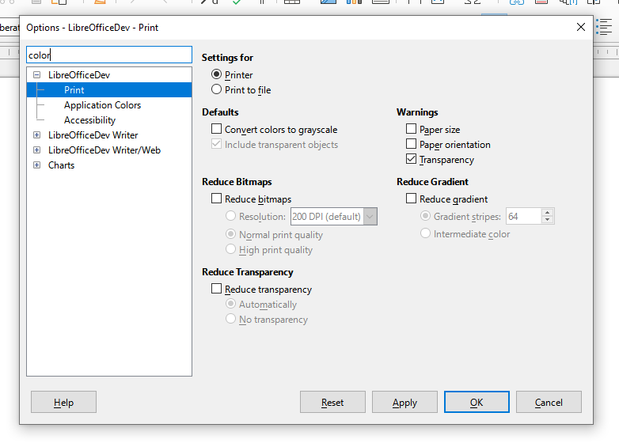

Final Report - Google Summer of Code 2023 - Search Field in Options
About project
LibreOffice is a complex application with a large and growing number of options. It is not easy to find the right needle in the haystack. Like most other complex applications, it will be valuable and useful enhancement to add a search field to the “Tools > Options” dialog that iterates over the various tabs and filters where the search text is found. The Search Field in Options project aims to provide this search functionality in “Tools > Options” page.
- Project page: https://summerofcode.withgoogle.com/programs/2023/projects/IKtSHIH1
- Enhancement request on Bugzilla: https://bugs.documentfoundation.org/show_bug.cgi?id=49895
- Patch on Gerrit: https://gerrit.libreoffice.org/c/core/+/152519
Tasks
- Add search field to Options dialog - UI
- Implement search function
- Include Options TreeView’s parent and child node names into searching
- Add
GetAllStrings()method to fetch strings from 69 dialogs step by step - Include following element strings into searching:
- labels
- check buttons
- radio buttons
- toggle buttons
- link buttons
- buttons
- Include accessibility elements into searching:
- accessible-names
- accessible-descriptions
- tooltip-texts
- Include option pages from extensions into searching
- Initialize all dialogs at background if it’s possible (
salhelper::Thread- asynchronously) - Initialize all dialogs to get strings properly (not in background - synchronously)
- initialize ~half of them after opening the options
- and initialize remaining ones after doing a search
- Update Options TreeView properly after the searching done
- Expand the first node and select first child-node after search by default
- Remove Hyphen (
_) and Tilde (~) symbols from fetched strings to make the search function work correctly
My Work during GSoC
During 13 weeks GSoC program, I added a search field in Options dialog and included the node names and their .ui strings into searching. Since sub-dialogs under the Options are not initialized at startup of Options dialog, it was not possible to access their .ui strings. To overcome this issue we had two options:
- Option A: Extract .ui strings at build-time and fetch them at run-time
This option requires working on file operations, LibreOffice’s build system, makefiles, localization etc. I worked on this option for ~5 weeks but this approach caused a lot of issues that took the project out of its scope. For example, how to deal with localization issue while extracting strings at build-time? This was another big problem… - Option B: Initialize all dialogs in some way and get their strings
This option is more understandable and simple. Instructions are clear. No need to worry about localization. No need to work on file operations, extracting and fetching data, working with makefiles etc…
When I felt that Option A is just wasting my time (~5 weeks); I switched to Option B where I can -at least- make some progress. The main issue in Option B was initializing all dialogs which takes about 4-8 secs. I tried to initialize them at background but there was some errors on Win10 that I don’t reproduce the issue on my linux machine. Then I tried to see the errors on Win10 with a virtual machine, but it was too slow to test. Therefore I uninstalled Manjaro/Linux (which I’ve been using it more than 1.5 years) from my computer and had to install Win10 (which I last used 6 years ago) on my machine to see the problems in there. There was some visual inconsistencies while initializing sub-dialogs using salhelper::Thread at background.
After working long hours for weeks meanwhile the time was running out, I decided to initialize almost half of them at Options dialog startup and the remaining ones at the time of searching. In that way, time of initializing process is divided by ~2 which can be acceptable time in some degree in terms of user experience.
There is a single patch on Gerrit for this project: https://gerrit.libreoffice.org/c/core/+/152519. The patch has more than 30 patchsets and includes “+2255 -47” changes.
The most challenging part was implementing GetAllStrings() function for every ~69 dialogs step by step. Current implementation may not be the best solution for user experience, but at least searching through the numerous options is now possible.

Whats left to do or can be done?
Following tasks are left and can be implemented after GSoC:
- Include accessibility elements into searching:
- accessible-names
- accessible-descriptions
- tooltip-texts
- Include option pages from extensions into searching
- Initialize all dialogs at background if it’s possible (
salhelper::Thread- asynchronously)
Additional hacks
- Show modified options with some special indicator (as in KDE settings). (better to discuss this idea in a separate ticket)
- Implement highlighting feature
Tasks I’ll be working on after GSoC
- improvement on the initialization of the dialogs, maybe it can be possible to initialize them at background without encountering any visual inconsistencies - especially on Windows.
- Implementing the remaining tasks:
- Include accessibility elements into searching
- Include option pages from extensions into searching
- If everything works fine I’d like to work on the highlighting feature
- Also it would be prettier if Options dialog have a modified options indicator (as in KDE settings)
Thanks
I’m very happy that we all reached the end of GSoC. During that time, I know that I had a responsibility for doing everything that I can. Therefore I worked hard and tried to complete as much tasks as I can.
I learned a lot of things during the GSoC. Although GSoC is finished, I will definitely continue to contribute to LibreOffice. I am really happy to be a part of the LibreOffice community and Google Summer of Code. I’m really thankful to LibreOffice and Google for providing us this such a great opportunity which helped me gain this amazing experience!
I always tried to be active on IRC #libreoffice-dev channel, and I want to thank for everybody who helped me about my questions.
And most importantly, greatly thankful to Andreas Heinisch and Heiko Tietze who were my mentors throughout the GSoC period. They always guided me everything about my questions. Thank you endlessly for your time and effort. I appreciate that you always motivating and encouraging me in all that I attempt and do. I can never truly express how grateful I am. Your guidance, reviews, help and shared experiences have been invaluable. Thank you very much for everything.
I’d like to express my gratitude to everyone in the LibreOffice community for their help and kindness. They always tried to answer my questions on IRC. I fell very lucky to work with this amazing community. I have learned a lot from you and I will never forget this wonderful experience.
Regards,
Bayram Çiçek
All weekly GSoC reports:
- 26 Aug 2023 Final Report - Google Summer of Code 2023 - Search Field in Options
- 14 Aug 2023 Week #7 - #11 - GSoC 2023 Weekly Report - Search Field in Options
- 08 Jul 2023 Week #5 and #6 - GSoC 2023 Weekly Report - Search Field in Options
- 26 Jun 2023 Week #4 - GSoC 2023 Weekly Report - Search Field in Options
- 18 Jun 2023 Week #3 - GSoC 2023 Weekly Report - Search Field in Options
- 10 Jun 2023 Week #2 - GSoC 2023 Weekly Report - Search Field in Options
- 03 Jun 2023 Week #1 - GSoC 2023 Weekly Report - Search Field in Options
- 18 May 2023 Google Summer of Code 2023 Timeline - Search Field in Options
Useful links:
- https://gerrit.libreoffice.org/q/owner:bayramcicek2125%2540gmail.com (my all contributions to LibreOffice)
- https://translations.documentfoundation.org/user/bayramcicek/ (my translations in LibreOffice)
- https://bayramcicek.github.io/libreoffice/ (all blog posts related to LibreOffice development)
- https://summerofcode.withgoogle.com/programs/2023/projects/IKtSHIH1 (Google Summer of Code - Project page)